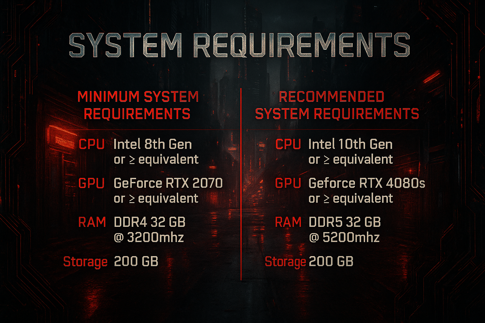

Requirements: an official PC copy of Cyberpunk 2077 2.5, Phantom Liberty, REDmod, Windows 10/11, and an SSD.
System Requirements
Based on testing and community feedback. For graphics settings, see the FAQ.

Check Wabbajack's space requirements before installing. Leave room for downloads, extraction, and backups.
Prepare the Game
Chrome & Blood Setup checks your game, installs missing prerequisites, and opens the list in Wabbajack. Update your NVIDIA or AMD drivers before installing.
- Extract the entire ZIP, then run
ChromeBloodSetup.exeKeep the Assets and licenses folders beside it. Windows will ask if a step needs administrator permission.
- Select your game
Choose the right copy if more than one is found, then follow the checks. Review the selected actions before applying them.
- Keep your changes or clean up unwanted mods
Cleanup is optional. Keep intentional changes, including swapped DLSS files. If you clean, purge Vortex deployments first and close the game, MO2, and Steam. Setup keeps backups. If cleanup cannot finish, retry, use the manual instructions, or continue.
- Open C&B in Wabbajack
Continue with the Wabbajack installation steps below.
Setup is optional. Choose Skip setup, or close it and open Wabbajack yourself.
Setup is unsigned, so Windows may show an unknown-publisher warning. Download from the linked GitHub release.
Prepare the game manually instead
- Perform a clean install of Cyberpunk 2077
No mods or leftover files, using the exact game version required by your C&B revision. A newer patch is not automatically compatible. Install it outside of
Program Files. - Keep cloud sync away from the install
Do not put the game, the modlist, or the downloads folder anywhere OneDrive, Dropbox, or any other sync service touches. Synced folders lock files mid-install and break MO2's virtual file system.
- Install the Visual C++ Redistributables (All-in-One)
Extract the entire ZIP, then run
install_all.bat. - For Steam: update only on launch
- Right-click Cyberpunk 2077 in your Steam Library → Properties
- Go to the Updates tab
- Set Automatic Updates to "Only update this game when I launch it"
- From now on, only launch the game through Mod Organizer 2. This preference does not freeze the game version
- Make sure all official DLC is installed
- Install REDmod
It's a free DLC on Steam — Steam must show both Cyberpunk 2077: REDmod and Cyberpunk 2077: Phantom Liberty as installed.
- Update your GPU drivers
- Install the DirectX End-User Runtime
Install with Wabbajack
Antivirus exclusions
Antivirus software can quarantine files that MO2 needs. Add the installation and downloads folders to its exclusions before installing. If files disappear or the game will not launch, check quarantine.
- Open Windows Security
- Go to Virus & threat protection
- Click Manage settings
- Scroll to Exclusions → Add or remove exclusions
- Add your Chrome & Blood installation folder
- (Optional) Also exclude
ModOrganizer.exeandCyberpunk2077.exe
- Open Wabbajack
Setup opens it for you. If you skipped Setup, download it to a folder outside Cyberpunk and Program Files, such as
D:\Wabbajack - Open Browse Modlists, filter by Cyberpunk 2077, and find Chrome & Blood
Sign in to Nexus Mods when prompted. You can also open the listing from the Nexus Collection or Nexus page — both route into Wabbajack.
- Set your paths
- Installation:
D:\Wabbajack\Chrome & Blood - Downloads:
D:\Wabbajack\downloads— a shared downloads folder lets different Wabbajack lists reuse the same archives - Keep both folders on the same drive as Cyberpunk, outside the game directory, Program Files, and cloud-synced folders
- Installation:
- Hit Install
Let Wabbajack finish. Installation time depends on your connection and hardware. Set any antivirus exclusions first (see above).
First Launch
- Open ModOrganizer.exe from the list's installation folder. Select Chrome & Blood - Standard Profile and press Run. Launch through MO2 each time.
- Press Numpad 0 to open Unified Mod Settings. Browse by category or search for a mod. Adding or removing mods is covered by Rule 11.
- Press H to open the Character menu, then select Database. Open the first category and start with C&B - Start Here.
- Performance not ideal? The FAQ's Graphics & Performance section covers graphics settings.
Archive Order and Update Notices
The Archives Load Order tab is separate from the left-pane mod order. Higher legacy archives win. Keep the supplied order unless you are customizing the list.
MO2 can notify you about list updates and open Wabbajack. It does not install updates automatically. Close MO2 and the game before updating.
Updating the Modlist
5.0 supports existing saves; a new game is recommended. Back up saves and personal settings before updating. The Immersive profile has been retired; use Chrome & Blood - Standard Profile after installation.
- Close the game and MO2, then open Chrome & Blood in Wabbajack
Select the new version in the gallery.
- Point it at the same install folder you used before
Keep your existing installation and downloads paths.
- Install, then launch through Mod Organizer 2
Back up first: back up your saves and any personal settings stored in Overwrite. See the FAQ for folder locations and instructions for moving old Immersive saves to Standard.